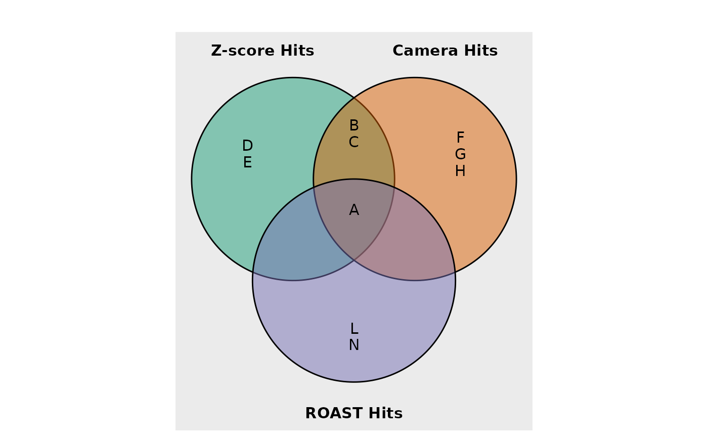
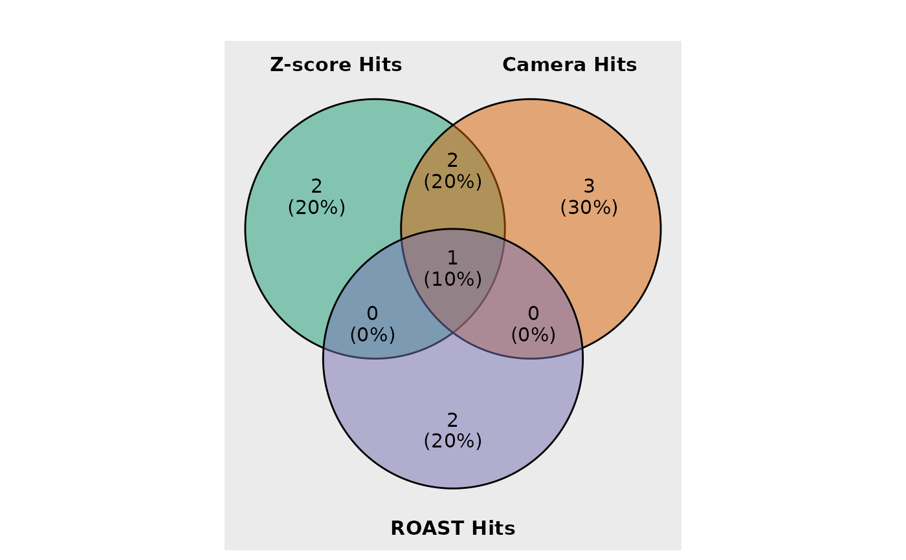
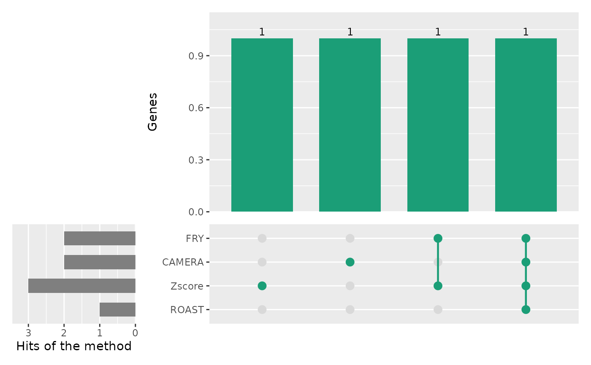

Shows how the hits of several methods overlap: a Venn diagram for up to three methods, an UpSet plot for more. The results can come from any hit-finding method of ScreenR, and from any number of methods.
Arguments
- ...
The results of the methods: gene-level tables with a Gene column (for example from
find_gene_zscore_hit,find_camera_hit,find_roast_hit,find_time_hitorfind_zscore_hit) or vectors of gene names. Name them to label the methods (for exampleFRY = fry_result); unnamed results are labelled with the expression given (for examplefry_result). A single named list of results can also be given. Tables with one row for each barcode (such ascompute_barcode_statistics) are not accepted. For compatibility, the names hit_zscore, hit_camera and hit_roast are labelled as in previous versions.- fdr
An optional FDR threshold applied to the results with an FDR column. By default (NULL) all the genes of each result are used.
- type
"auto" (default): a Venn diagram for up to three methods and an UpSet plot for more; "venn" (at most three methods) or "upset".
- show_elements
In the Venn diagram, whether to show the gene names instead of the counts (default TRUE). When a region has more than max_elements genes, its count is shown.
- show_percentage
In the Venn diagram, whether to add the percentage of all the hits to the counts (default TRUE).
- max_elements
The largest number of gene names written in a region of the Venn diagram (default 6).
- n_intersections
The largest number of combinations of methods shown in the UpSet plot, the largest ones first (default 20).
- alpha
The opacity of the circles of the Venn diagram. Default 0.5.
- stroke_size
The width of the circle borders.
- set_name_size
The text size of the method names in the Venn diagram.
- text_color
The color of the counts or gene names.
- text_size
The text size of the counts or gene names.
- title
The title of the plot.
- color
The fill colors of the circles of the Venn diagram (one for each method) or, for the UpSet plot, the color of the bars and dots.
Details
The UpSet plot has one column for each combination of methods that has hits: the dots below show the methods of the combination and the bar above the number of genes found by exactly those methods. The bars on the left give the number of hits of each method. Unlike a Venn diagram, it stays readable with many methods.
Use fdr to plot the hits at a common threshold when the results were
computed with fdr = 1 (all the genes). Results without an FDR column
(for example of find_zscore_hit) and vectors of gene
names are taken as lists of hits.
No ggplot2 theme is applied: set it with
theme_set or add one (with & for the
UpSet plot, which is a patchwork of several plots).
Examples
hit_zscore <- data.frame(Gene = c("A", "B", "C", "D", "E"))
hit_camera <- data.frame(Gene = c("A", "B", "C", "F", "H", "G"))
hit_roast <- data.frame(Gene = c("A", "L", "N"))
plot_common_hit(hit_zscore, hit_camera, hit_roast)

# Number of genes instead of their names
plot_common_hit(hit_zscore, hit_camera, hit_roast, show_elements = FALSE)

# More than three methods: UpSet plot, at an FDR of 5%
results <- list(
FRY = data.frame(Gene = c("A", "B", "C"), FDR = c(0.01, 0.02, 0.3)),
CAMERA = data.frame(Gene = c("A", "C"), FDR = c(0.04, 0.01)),
Zscore = c("A", "B", "D"),
ROAST = data.frame(Gene = c("A", "B"), FDR = c(0.01, 0.6))
)
plot_common_hit(results, fdr = 0.05)
